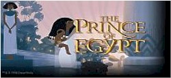
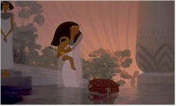
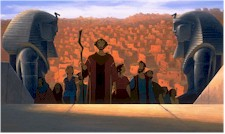

Contents | Features | Reviews | Books | Archives | Store |
 |
|
| Movie Credits | Buy It! |
The Prince of Egypt
Review by Carrie Gorringe
Posted 18 December 1998
|  | Directed by Brenda Chapman, Steve Hickner, and Simon Wells Starring the Voices of
Val Kilmer, Ralph Fiennes, |
From all accounts, it appears that 1998 will be known in film circles as the year of the insects and of the remakes. In the latter category, we've experienced, for the most part, pallid remakes of Hitchcock’s Dial M for Murder (updated but not improved to resemble A Perfect Murder) and, of course, Gus van Sant’s film-school remake of Psycho, pedantic beyond the point of redundancy. Now, in the name of treading on (as opposed to "in") the paths of what passes for a venerable cinematic past, Dreamworks has brought us an animated version of De Mille’s The Ten Commandments.
Or, rather, this new production can be best described as one half of The Ten Commandments, namely the first, good half, when moral lines are clearly drawn (good Hebrews, bad Egyptians) and before that infernal Golden Calf incident which leads to the forty years of wandering in the wilderness (there’s not much dramatic value in watching people wandering aimlessly around, unless the audience for this film consists of Beckett fans -- a highly unlikely prospect). There’s no Charlton Heston or Yul Brenner this time around, but there’s the baby in the bullrushes, his moral awakening, the "let my people go" exclamation, the locusts, the deaths of the first-born sons, all culminating in that infamous parting of the Red Sea and the drowning of evil Pharaoh’s five hundred chariots. As if this overly descriptive synopsis doesn’t make the point, ominous signs appear not too far into The Prince of Egypt that all will not be at all well with this production -- less than three shots into the proceedings, as a matter of fact. At that point, the audience is treated -- in the same shot -- to a sniveling disclaimer about the attempts to convey historical accuracy in the face of artistic license and the "revelation" that the story of Moses can be found in the book of Exodus. Such requisite nods to political correctness, fundamentalist style, and cultural illiteracy, respectively, set the tone for the rest of the film; it falls into the classic trap of trying to offend and/or confuse nobody and ends up pleasing exactly that number of people.
The real tipoff comes in the opening sequence, featuring a group of Jewish slaves either being subjected to genocidal practices, through the mass drowning of their sons on the orders of a paranoid Pharaoh (for those who don’t remember, this is the reason why Moses’ mother gives him up to the basket and sends him down the Nile where he is found by the Pharaoh’s daughter and adopted into the Egyptian royal family), not to mention the appalling specter of slaves singing in a musical number while they are being beaten by royal guards. Obviously, the second construct is meant to inspire sympathy for the downtrodden, but, frankly, it comes off as being in extremely bad taste. While a mother’s melancholy lullaby for the child she is about to send away for his own salvation is affecting, the idea that starving slaves can sing about freedom with lash marks on their back is simply vile (it makes Mel Brooks’ blackly humorous production number about the Inquisition and converting the Jews through torture to Christianity in History of the World, Part One seem positively lyrical by comparison). Presumably, historical distance is supposed to make this sort of thing palatable -- i.e., no survivors are around to complain about the desecration of their memories -- but, even without the immediacy of the historical events, anyone with half a brain knows this isn’t feasible.
One could argue that the juxtaposition of violence and dance numbers has occurred before on-screen, most effectively in Bob Fosse’s film version of Cabaret, and most notably in the sequence which intercuts a musical number with the brutal murder of a Jewish man in the alley behind the nightclub. The difference between Prince and Cabaret, and their use of violence is profound: Cabaret isolates the violence outside the music hall (and hence outside the main sphere of action), it is very carefully linked in a metaphorical sense straight back to what is happening inside. There’s no avoiding the musical’s central tenet that art imitates and is corrupted by life, and artists, by extension, cannot claim special exemption from the political activities swirling around them, especially in Berlin in 1933; geographical isolation is no excuse. By contrast, Prince’s creators expect the audience to swallow the unrealistic spectacle of singing slaves at work. It’s a violation not only of some moral standard, however vague, but of genre expectations; musicals, until very recently, didn’t lend themselves to the fusion of overt violence with music, and even Fosse, as indicated above, couldn’t achieve complete integration. The singing-slaves number in Prince is admittedly an attempt at evoking compassion for the characters’ plight, but all it inspires is a combination of confusion and disgust, and the film is overflowing with such clumsiness that it really doesn’t need any further assistance in this particular area.
Moreover, it doesn’t help matters much when an inability to distinguish between affect and effect is the least of the film’s problems (though the animation is, if not exceptional in design, of the sufficiently high quality expected at this production level). This new Moses is hardly the stuff of legend. Voiced by Val Kilmer, he is a whiny, self-centered individual, who suffers from self-doubt to the point of paralysis. At least Cecil B. and Chuck Heston ensured that their Moses, for all his insecurities, never doubted the rectitude of his mission. The Moses in Prince has a backbone of cooked macaroni; he may seem less superhuman, but he also seems less capable. While watching him, you can only wonder why God, in His infinite wisdom, chose this nebbish for the task of liberation (maybe the Pharaoh’s men had been too efficient in the opening sequence, and this is a case of beggars and choosers). As for the film’s much-lauded "historical accuracy" despite allowances having been made for "artistic" license, this reviewer will refrain from commenting in detail, except to suggest that such a goal was impossibly lofty from its inception, not only because much of the evidence is still inconclusive, but also because the idea of juxtaposing historical accuracy and art in film is as unlikely to stand as a pledge of sobriety extracted from an alcoholic locked in a wine cellar; imbibing and creativity always win out. In the case of The Prince of Egypt, the audience is being put through de Mille again and in a more sloppily earnest and cumbersome fashion than anything de Mille could ever have dreamed up. Fortunately, the audience will punish the filmmakers for their asinine attempts at idolatry: they shalt not have good box-office receipts.
Contents | Features | Reviews | Books | Archives | Store
Copyright © 1999 by Nitrate Productions, Inc. All Rights Reserved.